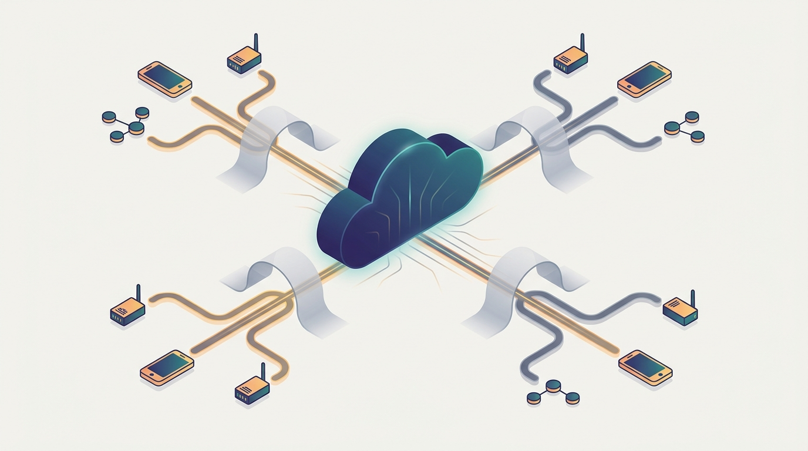

"They moved me out of the warm datacenter and bolted me to a lamppost. My neighbors are a traffic camera and a parking meter, my uplink drops out every afternoon, and somehow I am still expected to know a pedestrian when I see one."
An Inference Model Deployed to the Curb
Every prior chapter assumed a cluster you own: contiguous, fast-networked, plugged into the wall. This chapter takes the same scale-out instinct and pushes it outward to the periphery, where the machines are phones, cameras, vehicles, and gateways, the network is intermittent, the power is metered, and no single scheduler owns anything. The datacenter of Chapter 33 concentrated compute so a coordinator could place a tightly coupled gang of workers one hop apart. The edge does the opposite: it scatters compute across millions of heterogeneous, resource-constrained, intermittently connected nodes that sit where the data is born and the action must be taken. Distribution here is not a choice made for throughput; it is forced by physics, by privacy, by latency budgets a round trip to the cloud cannot meet. This chapter teaches you to reason about the cloud-fog-edge-device continuum as one design surface, deciding what computes where, what crosses the network, and what never leaves the device at all.
Chapter Overview
The first six parts of this book, and Chapter 33 with them, lived inside a perimeter. The fabric was fast, the nodes were homogeneous and well powered, and a control plane owned a contiguous pile of machines. This chapter steps over that perimeter. Distributed AI at the edge runs on devices the system does not own and cannot count on: a phone whose owner closes the app mid-inference, a roadside camera on a flaky cellular link, a drone whose battery sets a hard ceiling on every model it can carry. The unifying picture is a continuum that runs from the centralized cloud through regional fog nodes to edge gateways and finally to the device in your hand, and the central act of this chapter is placement along that continuum: deciding which layer runs which part of the computation, what data crosses each hop, and where a result must be produced fast enough to matter. The pulls that organize the chapter, latency, bandwidth, energy, and privacy, are exactly the pulls a datacenter could ignore and the edge cannot.
The chapter builds that continuum from the outside in. Section 34.1 frames edge AI as the deliberate distribution of intelligence to the periphery and names the constraints, latency, bandwidth, energy, and privacy, that make the move necessary rather than optional. Section 34.2 introduces fog computing, the regional tier between cloud and device that absorbs work too heavy for a sensor and too latency-sensitive for the cloud. Section 34.3 turns to the device itself, where on-device inference must fit a model into a few hundred milliwatts and a few megabytes, leaning on the per-node efficiency and quantization of Chapter 22. Section 34.4 joins device and cloud into one pipeline through edge-cloud collaboration and split computing, partitioning a single network so an early stage runs locally and a later stage runs upstream.
The middle of the chapter widens from one device to many. Section 34.5 treats distributed sensing, where readings from many imperfect nodes are fused into an estimate no single sensor could produce. Section 34.6 brings the federated and decentralized learning of Chapter 14 to the edge, training a shared model across devices that keep their data local and report only updates. The final stretch confronts the demands the edge makes sharpest. Section 34.7 takes on latency-critical distributed AI, where a result late is a result wrong and the tail-latency arithmetic of a serving fleet becomes a hard real-time deadline. Section 34.8 grounds the whole continuum in robotics and autonomous systems, where perception, planning, and control are split across an onboard computer, a fleet backend, and sometimes a teleoperator. Section 34.9 closes on privacy-preserving edge AI, the discipline of keeping raw data on the device and letting only protected summaries leave it.
A word on why this matters even if every system you build lives in a datacenter. The edge inverts the assumptions the rest of the book rests on, and that inversion is clarifying. When the network is fast and free you can be careless about what crosses it; when each byte costs energy and each round trip blows a deadline, you are forced to decide what computation is worth its communication, which is the central question of distributed AI stated in its harshest form. The placement decisions here are the same packing-and-topology decisions of Chapter 33, but with the topology stretched across a continent and the scheduler dissolved into millions of independent agents. Learn to reason about the periphery and the datacenter reads as the easy case.
Prerequisites
This chapter draws several threads of the book out to the periphery, so it assumes the chapters that laid those threads down. From Chapter 14 it assumes federated and decentralized learning, FedAvg, gossip, and secure aggregation, which return in Section 34.6 as the way a fleet of devices trains a shared model without surrendering its data. From Chapter 22 it assumes per-node inference efficiency, quantization, pruning, and the KV-cache economics that decide whether a model fits on a device at all, the foundation the on-device inference of Section 34.3 stands on. From Chapter 5 it assumes the metrics, latency percentiles, throughput, and cost, against which every edge placement is judged, which the latency-critical material of Section 34.7 sharpens into deadlines. From Chapter 9 it assumes stream processing and online AI, the continuous-arrival model that distributed sensing in Section 34.5 and real-time perception inherit. Readers comfortable with those four threads can read this chapter as the place where the book finally meets the unreliable, resource-starved world outside the rack.
Learning Objectives
- Frame edge AI as the deliberate distribution of intelligence to the periphery, and justify the move from the latency, bandwidth, energy, and privacy constraints that force it.
- Place a computation on the cloud-fog-edge-device continuum, deciding which layer runs which part and what data crosses each hop.
- Fit a model to a device through the per-node efficiency and quantization of Chapter 22, and partition a single network for edge-cloud split computing.
- Fuse readings from many imperfect sensors into an estimate no single node could produce, and train across devices with the federated learning of Chapter 14.
- Reason about latency-critical distributed AI as a hard-deadline problem, and decompose a robotic or autonomous system across onboard, fleet, and remote tiers.
- Apply privacy-preserving techniques (on-device computation, secure aggregation, differential privacy) so that raw data never leaves the device that produced it.
If you keep one thing from this chapter, keep this: at the edge, distribution is not chosen for throughput, it is forced by physics, and every placement decision is a negotiation among latency, bandwidth, energy, and privacy that a datacenter never had to hold. A pedestrian detector must answer before the car arrives, so it cannot wait on a cloud round trip; a phone keyboard must learn from your typing without shipping your keystrokes anywhere; a sensor net must turn a thousand noisy readings into one trustworthy estimate on a battery budget. Each of these is the same continuum question asked under a different binding constraint: what computes on the device, what computes in the fog, what computes in the cloud, and what crosses the network between them. Read forward, the chapter is a tour of the layers (fog, device, split) and the cross-device disciplines (sensing, federated learning, real-time, robotics, privacy) that answer that question. Read as a question, it is a single checklist you apply to any peripheral system: which constraint binds here, which layer should hold this work, and is the result fast, cheap, and private enough to be worth its communication? The roadmap below walks the nine sections that build that checklist.
Chapter Roadmap
- 34.1 Edge AI as Distribution to the Periphery Why intelligence leaves the datacenter at all: the latency, bandwidth, energy, and privacy constraints that make pushing computation to the periphery a necessity rather than an optimization, and the cloud-fog-edge-device continuum the rest of the chapter reasons over.
- 34.2 Fog Computing The regional tier between cloud and device, gateways and micro-datacenters that absorb work too heavy for a sensor and too latency-sensitive for the cloud, and the placement logic that decides what lands there.
- 34.3 On-Device Inference Covers split inference and on-device neural network deployment through TensorFlow Lite, then adds the 2024-2026 story: on-device generative LLMs via ExecuTorch 1.0, llama.cpp, and MLC-LLM running 4-bit quantised 7B models at 30-90 tokens/sec on mobile NPUs, with hybrid NPU-CPU scheduling for the prefill-decode asymmetry.
- 34.4 Edge-Cloud Collaboration and Split Computing Partitioning one network across the continuum so an early stage runs on the device and a later stage runs upstream, choosing the split point that minimizes latency and bytes on the wire.
- 34.5 Distributed Sensing Fusing readings from many imperfect, noisy, partially overlapping nodes into a single estimate no individual sensor could produce, on the energy and bandwidth budget the periphery allows.
- 34.6 Federated Edge Learning The federated and decentralized learning of Chapter 14 brought to real devices, training a shared model across a fleet that keeps its data local and reports only protected updates over an unreliable link.
- 34.7 Latency-Critical Distributed AI When a result late is a result wrong, the tail-latency arithmetic of a serving fleet hardens into a real-time deadline, and the system must guarantee an answer in time, not merely on average.
- 34.8 Robotics and Autonomous Systems Perception, planning, and control split across an onboard computer, a fleet backend, and sometimes a remote operator, the canonical edge system where every constraint of the chapter binds at once.
- 34.9 Privacy-Preserving Edge AI Keeping raw data on the device that produced it and letting only protected summaries leave, through on-device computation, secure aggregation, and differential privacy at the periphery.
Read the nine sections in order and you will have a working map of distributed AI beyond the rack: Section 34.1 names the continuum, Sections 34.2 through 34.4 place computation along its layers, and Sections 34.5 through 34.9 name the cross-device disciplines, sensing, federated learning, real-time deadlines, robotics, and privacy, that make a fleet of weak nodes behave as one system. The thread to watch runs back to Chapter 14: the federated averaging and secure aggregation introduced there as an abstraction return in Section 34.6 and Section 34.9 as the concrete machinery of learning on real, unreliable, privacy-bound devices, which is why federated edge learning is the hinge of the chapter.
What's Next?
This chapter scattered AI across the periphery, where nodes are weak, links are flaky, and some of them may be in the hands of an adversary. That last possibility is the opening of the next chapter. Chapter 35: Reliable and Secure Distributed AI turns from where AI runs to how it survives, taking the faults this chapter took for granted, a dropped device, a poisoned update, a Byzantine worker that lies, and treating them as the central problem rather than a nuisance. The secure aggregation and differential privacy of Section 34.9 were a first taste; the next chapter develops Byzantine-robust aggregation, poisoning and backdoor defenses, and the fault-tolerance arithmetic that decides whether a distributed system keeps its promises when parts of it break or betray it. We have built the map of where intelligence lives; now we ask how it stays correct, available, and trustworthy when the world stops cooperating.
The edge frontier is no longer only small CNNs and keyword spotters. Phones, robots, vehicles, and gateways increasingly run compact language, vision-language, and speech models locally, then escalate to fog or cloud only when the local decision is uncertain or too expensive. Frameworks such as ExecuTorch and runtimes in the llama.cpp lineage make the deployment question concrete: which layers fit on the device NPU, which tokens or embeddings move to a gateway, and what privacy or latency is lost when the request leaves the device? The split-compute models of this chapter should therefore be read as the edge counterpart of Chapter 24: the same prefill, decode, memory, and routing economics appear, but battery, radio bandwidth, and physical safety join the cost function.
Situation: A warehouse robot uses a local vision-language policy to classify aisle state, blocked paths, and pick-bin anomalies.
Decision: The robot runs the fast perception and short-horizon plan on device, sends a compact scene embedding to a fog node only when confidence falls below a threshold, and reserves cloud calls for fleet-level map updates.
Why it works: Local inference preserves reaction time and keeps video off the network. Fog coordination gives nearby robots shared context. Cloud coordination updates the global model and map. The design is the edge continuum in one loop.
Bibliography & Further Reading
Foundational Papers
Satyanarayanan, M. "The Emergence of Edge Computing." IEEE Computer 50(1), 2017. ieeexplore.ieee.org
The canonical statement of why computation moves to the periphery: latency, bandwidth, and privacy, the three forces that frame the continuum of Section 34.1.
Bonomi, F., Milito, R., Zhu, J., Addepalli, S. "Fog Computing and Its Role in the Internet of Things." MCC Workshop on Mobile Cloud Computing (SIGCOMM), 2012. dl.acm.org
The paper that named fog computing and the regional tier between cloud and device; the conceptual origin of Section 34.2.
McMahan, H. B., Moore, E., Ramage, D., et al. "Communication-Efficient Learning of Deep Networks from Decentralized Data." AISTATS 2017. arXiv:1602.05629
The FedAvg paper that founded federated learning, training a shared model across devices that keep their data local; the engine of Section 34.6.
Bonawitz, K., Ivanov, V., Kreuter, B., et al. "Practical Secure Aggregation for Privacy-Preserving Machine Learning." ACM CCS 2017. eprint.iacr.org
The protocol that lets a server sum device updates without seeing any one of them; the cryptographic backbone of privacy-preserving edge learning in Sections 34.6 and 34.9.
Kang, Y., Hauswald, J., Gao, C., et al. "Neurosurgeon: Collaborative Intelligence Between the Cloud and Mobile Edge." ASPLOS 2017. dl.acm.org
The split-computing paper that finds the layer-by-layer partition point minimizing latency and energy; the method Section 34.4 develops for edge-cloud collaboration.
Dean, J., Barroso, L. A. "The Tail at Scale." Communications of the ACM 56(2), 2013. dl.acm.org
The classic on why tail latency dominates at scale and how to fight it; the arithmetic Section 34.7 hardens from an average into a real-time deadline.
Dwork, C., Roth, A. "The Algorithmic Foundations of Differential Privacy." Foundations and Trends in Theoretical Computer Science, 2014. cis.upenn.edu
The standard monograph defining differential privacy and its composition rules; the formal guarantee behind the protected summaries that leave a device in Section 34.9.
Tools & Libraries
Howard, A. G., Zhu, M., Chen, B., et al. "MobileNets: Efficient Convolutional Neural Networks for Mobile Vision Applications." 2017. arXiv:1704.04861
The depthwise-separable architecture that made vision models fit on a phone; the canonical example of a model designed for the on-device budget of Section 34.3.
Jacob, B., Kligys, S., Chen, B., et al. "Quantization and Training of Neural Networks for Efficient Integer-Arithmetic-Only Inference." CVPR 2018. arXiv:1712.05877
The integer-only quantization scheme that powers on-device inference on commodity hardware; the practical realization of Chapter 22's quantization at the edge in Section 34.3.
TensorFlow Lite: on-device machine learning. ai.google.dev/edge
The production runtime for deploying quantized models to phones, microcontrollers, and edge accelerators; the toolkit behind the on-device inference of Section 34.3.
TensorFlow Federated: machine learning on decentralized data. tensorflow.org/federated
The open framework for expressing and simulating federated computations; the practical entry point for the federated edge learning of Section 34.6.
Flower: a friendly federated learning framework. flower.ai/docs
A framework-agnostic toolkit for running federated learning across real heterogeneous devices; a concrete platform for the cross-device training of Section 34.6.
Systems & Documentation
ROS 2 Documentation: the Robot Operating System. docs.ros.org
The de facto middleware for distributed robotics, splitting perception, planning, and control across processes and machines; the substrate of the robotic systems in Section 34.8.
DDS: the Data Distribution Service (Object Management Group). omg.org/spec/DDS
The real-time publish-subscribe standard underneath ROS 2 that carries sensor and control traffic on a deadline; the transport that makes latency-critical robotics of Sections 34.7 and 34.8 possible.
NVIDIA Jetson: the edge AI and robotics platform. developer.nvidia.com
The accelerated embedded compute behind much on-device perception and autonomy; a concrete instance of the device tier whose power and memory ceilings shape Sections 34.3 and 34.8.